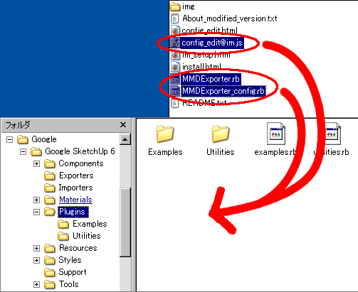

はじめに
これは、Google SketchUp(http://sketchup.google.com)からサイト「VPVP」(http://www.geocities.jp/higuchuu4/index.htm)で公開されているVOCALOID 3DPV製作用ツール「MikuMikuDance」（通称MMD）のアクセサリを出力するプラグインです。
１．ImageMagickをセットアップしてください。手順はこちら→ImageMagickセットアップ手順書
２．アーカイブを解凍すると出てくる"MMDExporter.rb"、"MMDExporter_config.rb"及び"config_edit@im.js"をGoogle SketchUpの"Plugins"フォルダにコピーしてください。

３．設定ファイルを編集します。手順はこちら→設定ファイル編集手順書
４．以上でインストールは完了です。使用方法はREADME.txtを参照ください。